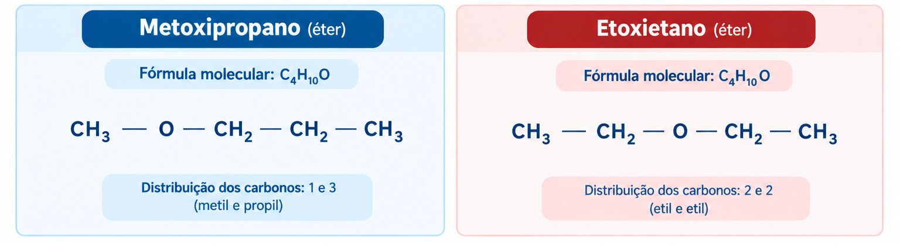
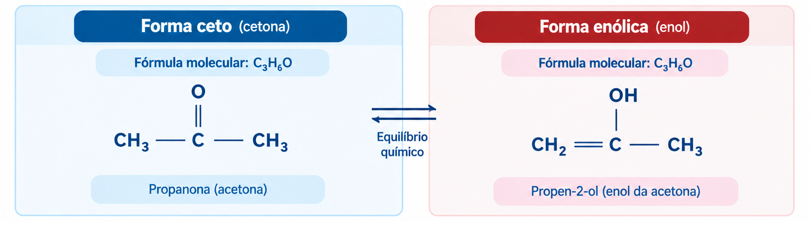

Tipos de Isomeria Plana
A Isomeria Plana pode ocorrer em vários tipos, como:
Isomeria de Cadeia
A isomeria de cadeia ocorre quando dois compostos apresentam a mesma fórmula molecular e a mesma função orgânica, mas possuem cadeias carbônicas diferentes. Essa diferença pode estar relacionada à presença de ramificações ou à organização da cadeia, que pode ser aberta ou fechada.
Exemplo: o butano e o metilpropano possuem fórmula molecular C₄H₁₀, mas o primeiro apresenta uma cadeia normal, enquanto o segundo possui uma cadeia ramificada.
Atenção para o ENEM: a principal diferença está no formato da cadeia carbônica, que pode ser normal ou ramificada, aberta ou fechada. Os compostos mantêm a mesma função orgânica.

Isomeria de Função
A isomeria de função ocorre quando dois compostos apresentam a mesma fórmula molecular, mas pertencem a funções orgânicas diferentes. Isso significa que, apesar de possuírem a mesma quantidade de átomos de cada elemento, suas estruturas apresentam grupos funcionais distintos.
Exemplo: o etanol e o éter dimetílico possuem fórmula molecular C₂H₆O. O etanol pertence à função álcool, enquanto o éter dimetílico pertence à função éter.
Atenção para o ENEM: identifique a função orgânica de cada composto. Isômeros de função apresentam a mesma fórmula molecular, mas pertencem a funções diferentes, como álcool e éter ou aldeído e cetona.

Isomeria de Posição
A isomeria de posição acontece quando dois compostos apresentam a mesma fórmula molecular, a mesma função orgânica e o mesmo tipo de cadeia carbônica, mas diferem na posição de um grupo funcional, de uma ligação múltipla ou de uma ramificação.
Exemplo: o propan-1-ol e o propan-2-ol possuem fórmula molecular C₃H₈O e pertencem à função álcool. A diferença entre eles está na posição do grupo hidroxila (—OH), que se encontra no primeiro carbono do propan-1-ol e no segundo carbono do propan-2-ol.
Atenção para o ENEM: a função orgânica e a estrutura básica da cadeia são mantidas, mas muda a posição de um grupo funcional, de uma ligação dupla ou tripla ou de uma ramificação.

Metameria ou Isomeria de Compensação
A metameria, também chamada de isomeria de compensação, ocorre quando dois compostos apresentam a mesma fórmula molecular e a mesma função orgânica, mas diferem na distribuição dos átomos de carbono em torno de um heteroátomo, isto é, um átomo diferente de carbono localizado entre carbonos da cadeia. Esse tipo de isomeria é comum em compostos das funções éter, éster e amina.
Exemplo: o metoxipropano e o etoxietano são éteres que apresentam a fórmula molecular C₄H₁₀O, mas diferem na distribuição dos carbonos em cada lado do átomo de oxigênio.
Atenção para o ENEM: também chamada de isomeria de compensação, ocorre quando há uma distribuição diferente dos carbonos em torno de um heteroátomo presente na cadeia, mantendo-se a mesma função orgânica.

Tautomeria ou Isomeria Dinâmica
A tautomeria, também chamada de isomeria dinâmica, é um caso particular de isomeria no qual dois compostos coexistem em equilíbrio químico, transformando-se um no outro por meio da migração de um átomo de hidrogênio e do deslocamento de uma ligação dupla. Os casos mais comuns são a tautomeria aldo-enólica e a ceto-enólica. Nesta última, ocorre um equilíbrio entre uma forma que apresenta o grupo carbonila (C=O) e outra que apresenta um grupo hidroxila (—OH) ligado a um carbono de uma ligação dupla. A tautomeria diferencia-se dos outros tipos de isomeria plana porque as duas formas podem se converter uma na outra espontaneamente, estabelecendo um equilíbrio químico.
Exemplo: um composto da função cetona pode estar em equilíbrio com sua forma enólica, que apresenta uma ligação dupla entre carbonos e um grupo hidroxila ligado a um deles.
Atenção para o ENEM: é um caso particular em que duas formas isoméricas se interconvertem por meio da migração de um hidrogênio e do deslocamento de uma ligação dupla, estabelecendo um equilíbrio químico.
